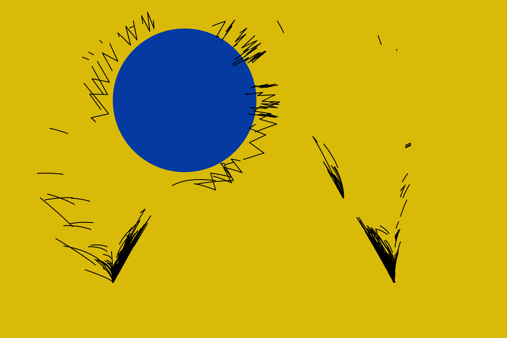
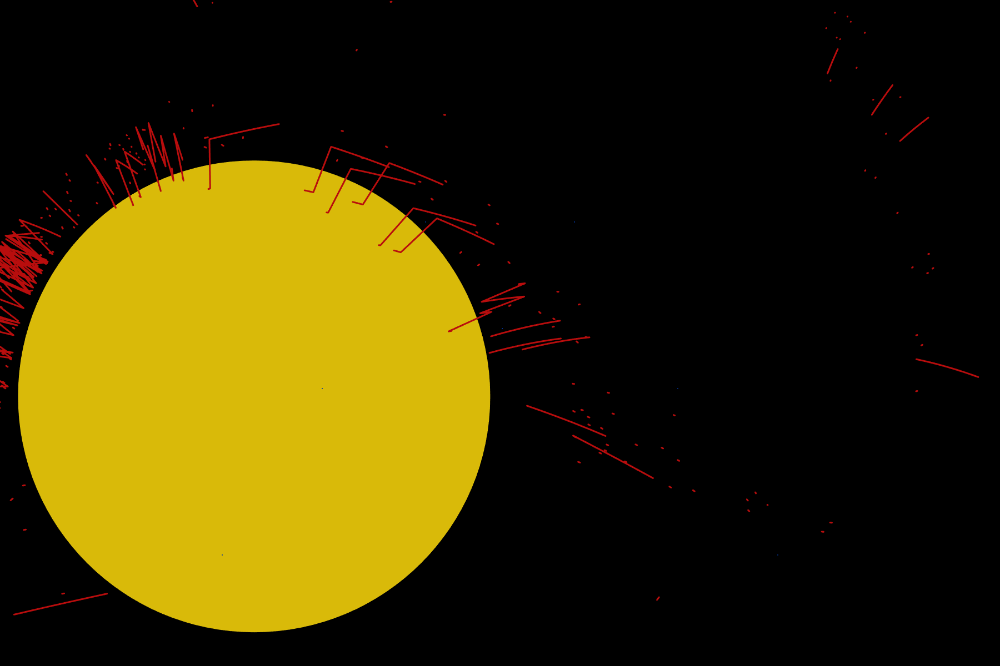
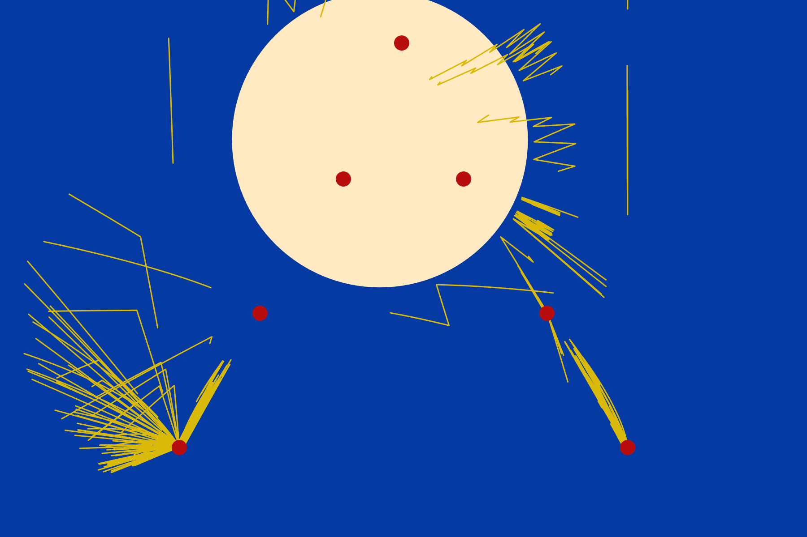
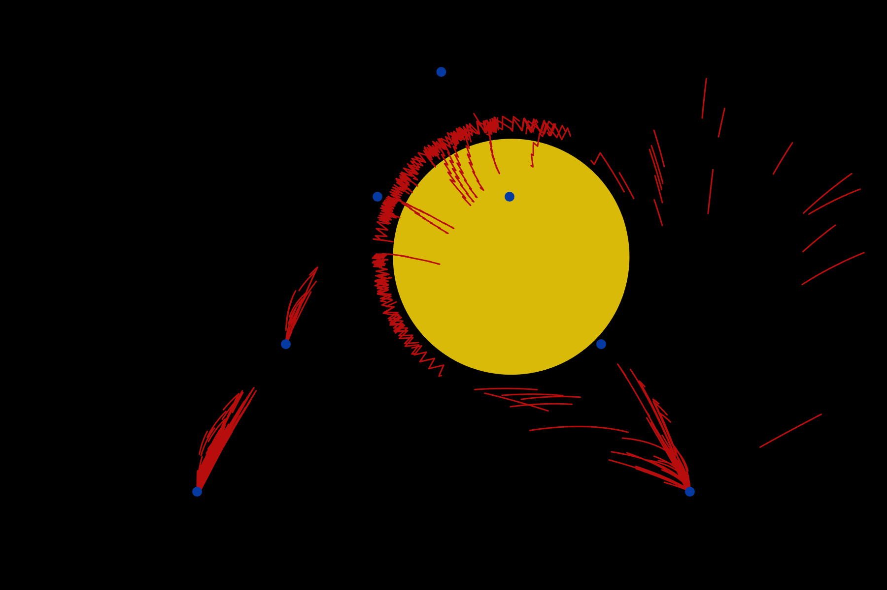
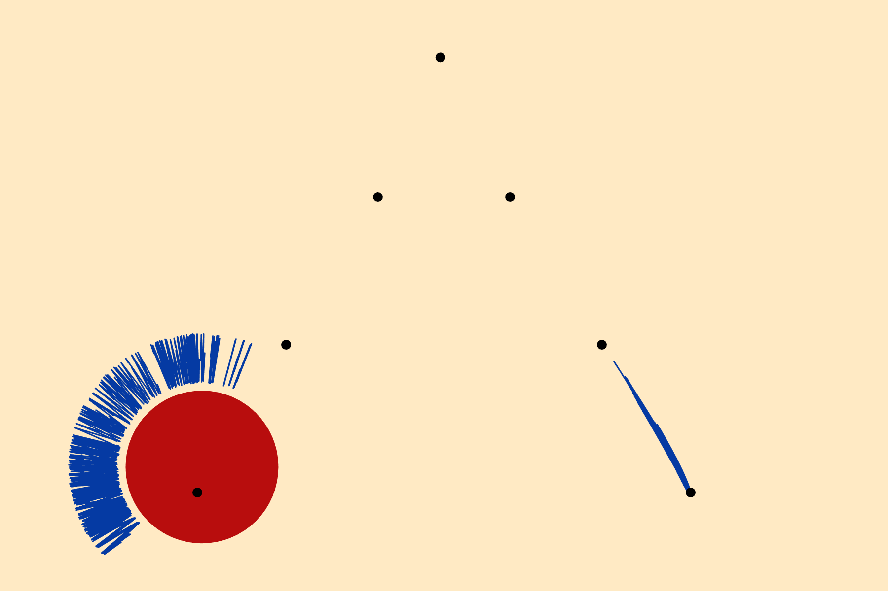
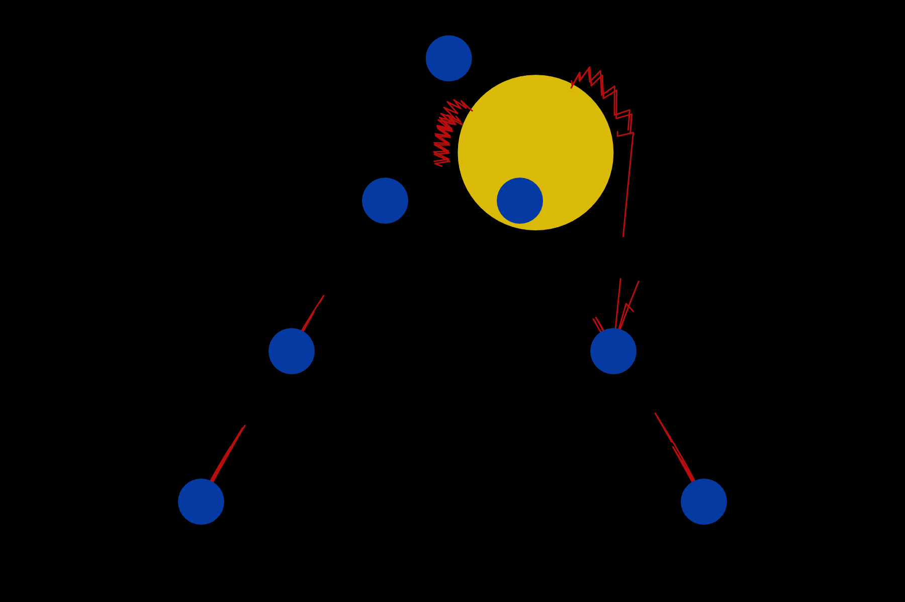
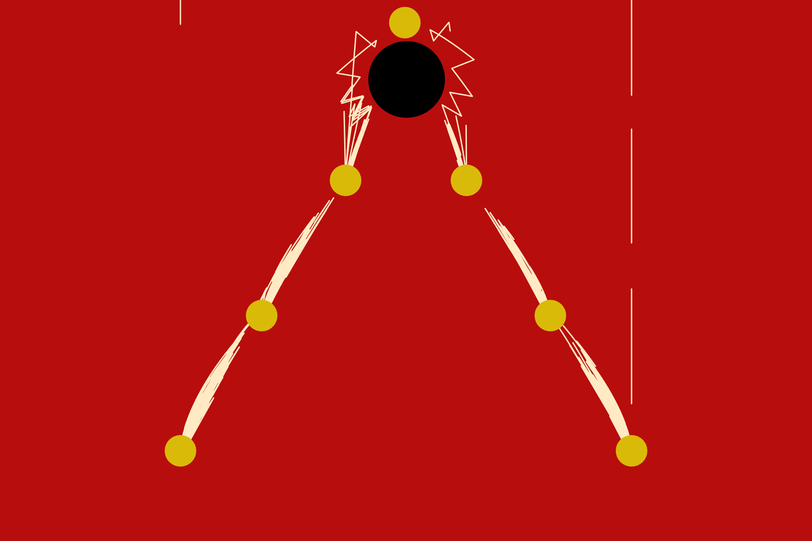
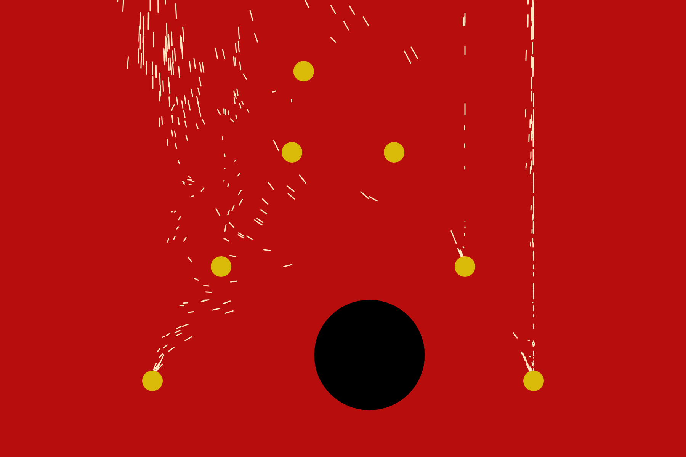
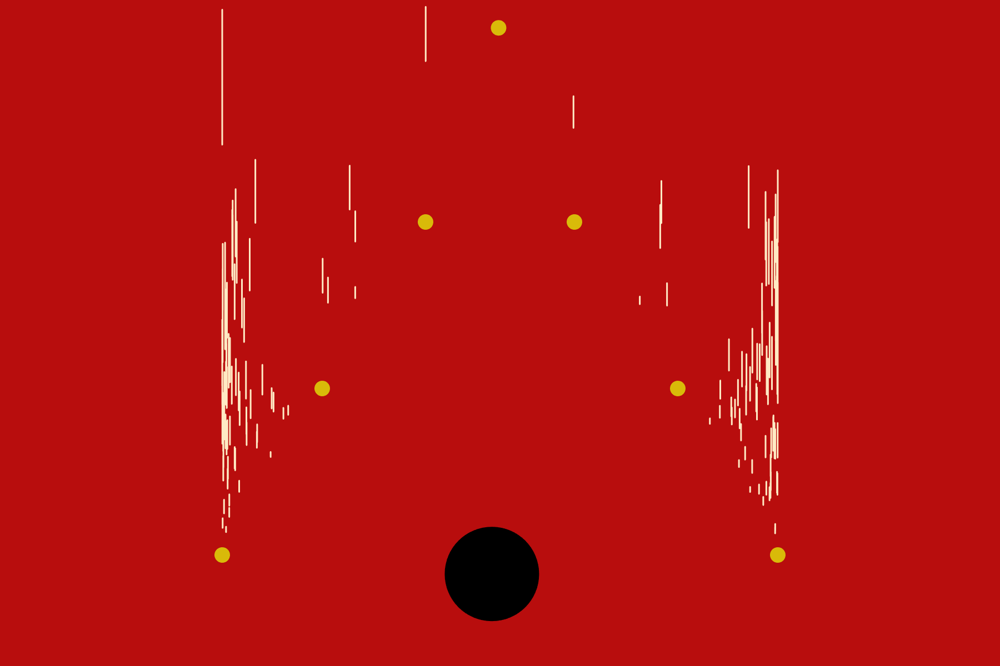
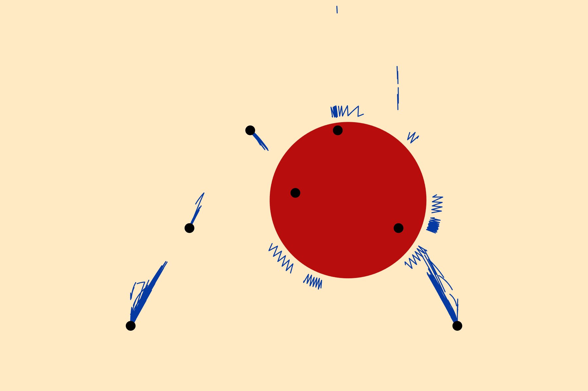

Hierarchy
A visual exploration of systemic oppression and the relentless pursuit of status.
Particles continuously ascend a hierarchical pyramid, symbolizing individuals trapped in an endless cycle of competition and struggle.
Each particle jumps upward in pursuit of the peak, driven by forces beyond their control, only to fall
and start again—a reflection of capitalism's futile promise of individual advancement.
The work creates an immersive experience that examines themes of individualism, competition,
and systemic pressure. Collisions between particles highlight the inherent conflicts within competitive
systems. Despite the oppressive atmosphere, the user gains brief moments of agency through interactive disruption—shaking
the pyramid to topple climbers, altering its height to create impossible odds, adjusting jump frequency and intensity, and spawning new particles.
Yet these interventions only momentarily disturb the cycle; the system persists, unchanged in its fundamental nature.
Rather than a game to win, this is a visual commentary on the structures that govern our ambitions
and the impossible nature of escape.








